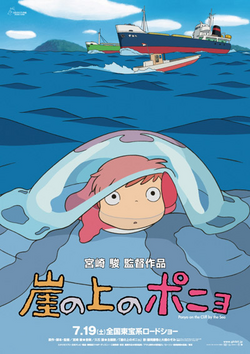

In this anime feature, 13-year-old Kiki moves to a seaside town with her talking cat, Jiji, to spend a year alone, in accordance with her village's tradition for witches in training. After learning to control her broomstick, Kiki sets up a flying courier service and soon becomes a fixture in the community. But when the insecure young witch begins questioning herself and loses her magic abilities, she must overcome her self-doubt to get her powers back.

In this animated feature by noted Japanese director Hayao Miyazaki, 10-year-old Chihiro (Rumi Hiiragi) and her parents (Takashi Naitô, Yasuko Sawaguchi) stumble upon a seemingly abandoned amusement park. After her mother and father are turned into giant pigs, Chihiro meets the mysterious Haku (Miyu Irino), who explains that the park is a resort for supernatural beings who need a break from their time spent in the earthly realm, and that she must work there to free herself and her parents.
